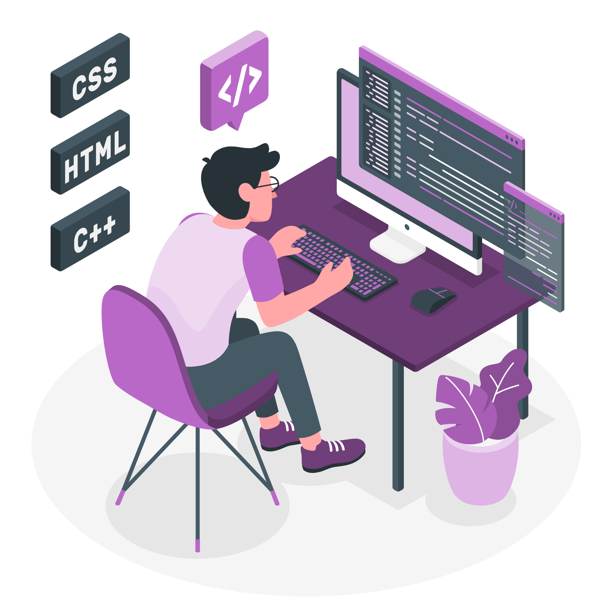
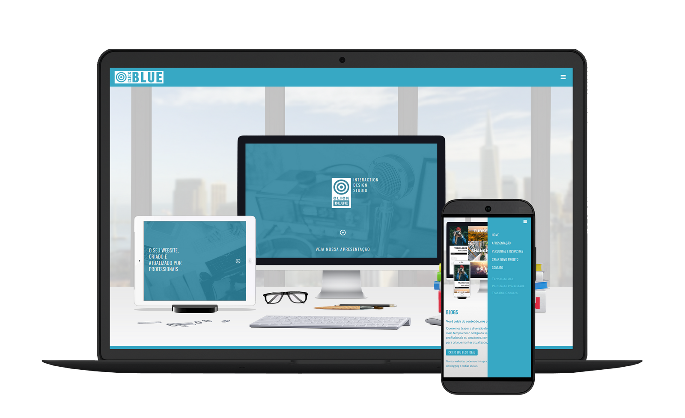

Hi, My self
Mukul Pandey
Mukul Pandey
And I am a passionate

Work Experience

Frontend Developer
I have worked in specializing in front-end technologies such as HTML, CSS, and JavaScript. I've created responsive and user-friendly websites for various clients, honing my skills in design, interactivity, and performance optimization. Passionate about staying current with industry trends and technologies.
Backend developer
I am extending my experience in backend web development, utilizing Node.js and Django for server-side scripting. I've managed data with MongoDB and Firebase, delivering scalable and efficient solutions while ensuring seamless communication between front-end and back-end components.

Machine Learning
My machine learning journey encompasses Kaggle projects and competitions. I've honed my skills in various algorithms, including Convolutional Neural Networks (CNNs), Long Short-Term Memory (LSTM) networks, Random Forest, and Linear Regression. Successfully applying these methods in real-world scenarios has enriched my expertise. Currently I'm diving into Deep Learning.
Blockchain
I'm venturing into the world of blockchain, focusing on Hyperledger Fabric. While relatively new to the field, I'm excited to explore its potential and contribute to innovative projects. My journey involves diving into distributed ledger technology and its applications in diverse domains.

UI/UX
I've applied my UI/UX expertise to projects and presentations, crafting user-centric designs that blend aesthetics with functionality. With a keen eye for user experience, I've strived to create engaging, intuitive interfaces that resonate with audiences, optimizing digital interactions for maximum impact.